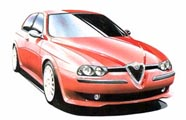
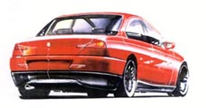
| The interior is designed to have a sporty character. The options are Recaro sport seats, Momo leather seats or velour seats. The characteristic rpm and km/h counters are like two eyes in front of the driver and all the instruments are turned slightly towards the driver contributing to make this a drivers car. | 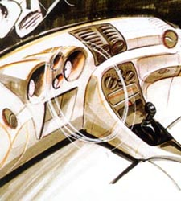 |
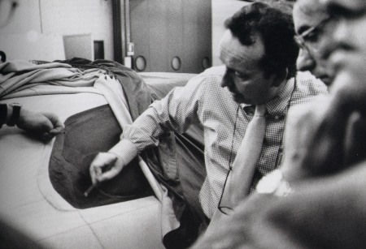
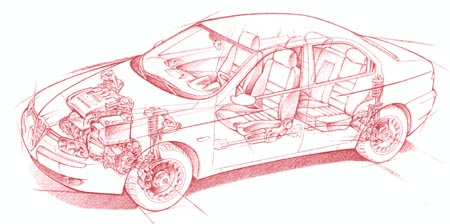
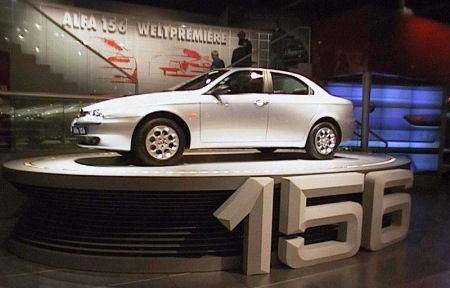
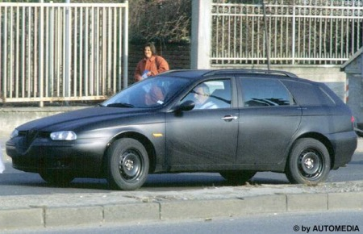
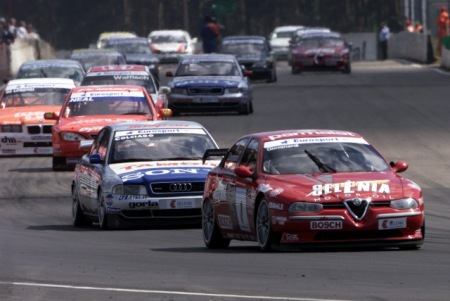
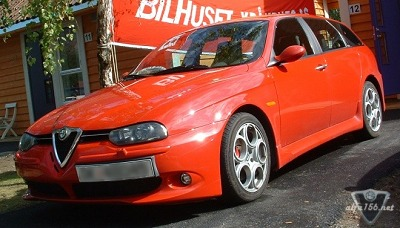 |
The Alfa Romeo 156 GTA was released for the public on the 2001 Frankfurt Motor Show. The windows vere all blacked out to prevent people to see the uptated interior before the launch of the facelifted 2002 models. |
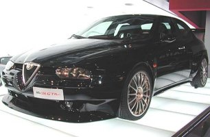 |
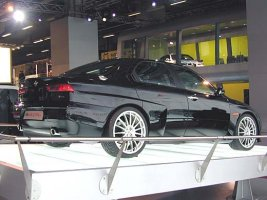 |
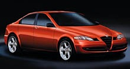
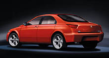
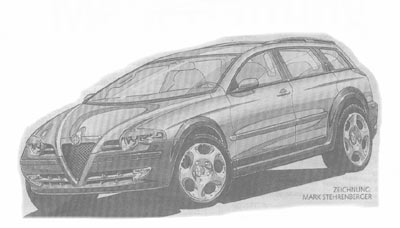
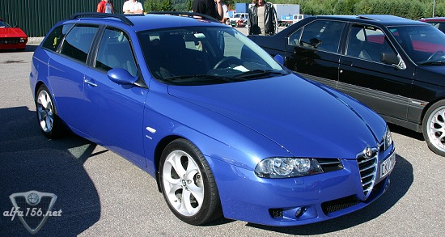
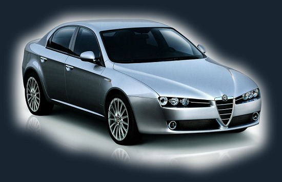